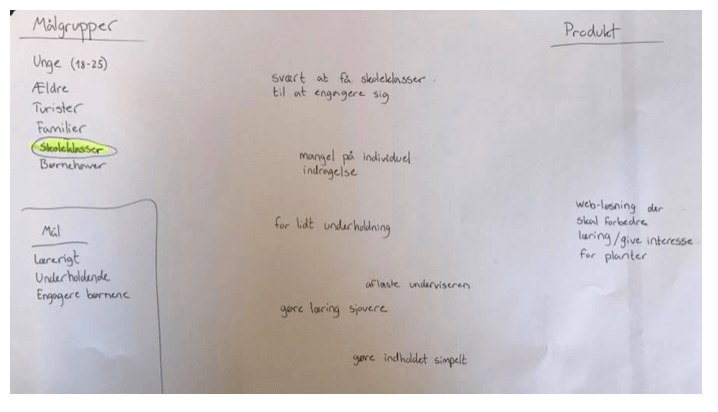
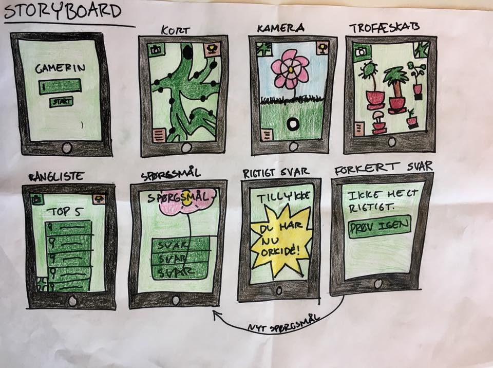
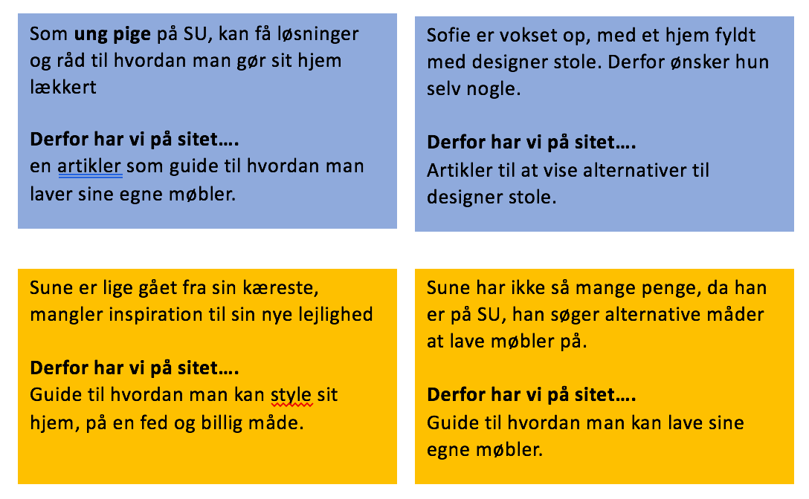
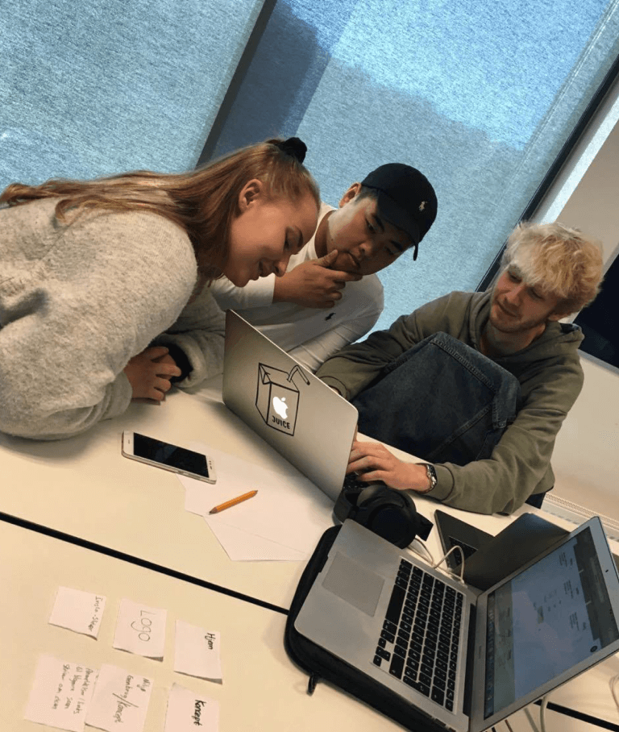
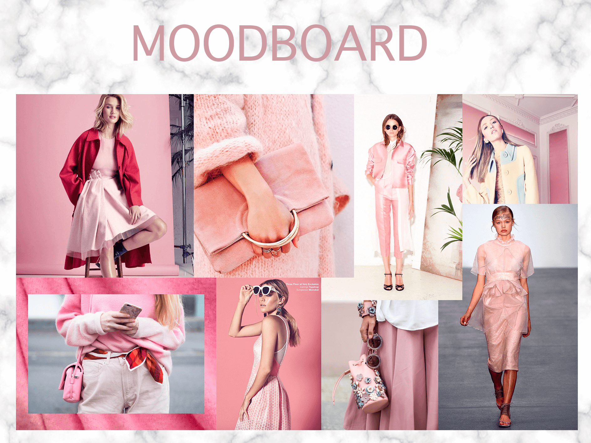
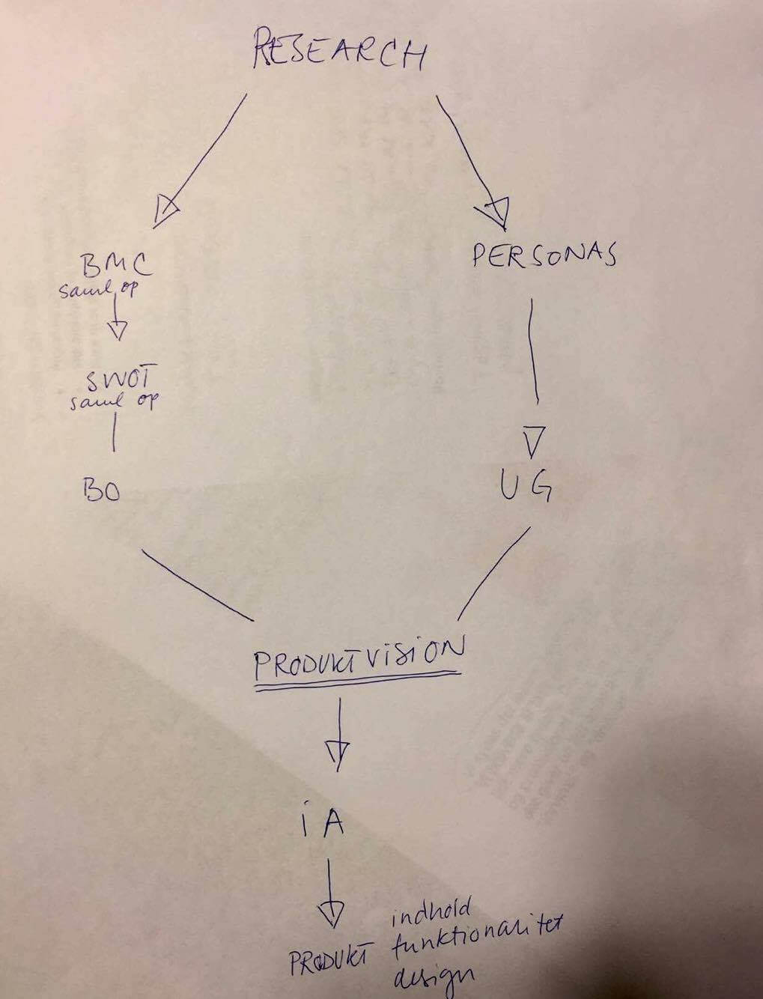

Det har jeg lært:
Case 1 var vores første projekt/case. Jeg har aldrig arbejdet på den måde før, så det var et spændende forløb. Det var første gang vi skulle være i grupper, så det synes jeg også var ret spændende, for vi kendte jo ikke rigtig hinanden på det tidspunkt. Jeg var så heldig, at komme i en super god gruppe.
Jeg har lært en masse igennem det her projekt. Jeg har specielt lært hvordan sprint metoden fungere. Det er en lidt stressende metode, men en ret fed metode, da man lærer en masse på kort tid.
Det var også vores første feltarbejde, som var ret spændende. Der lærte jeg, at det er vigtigt at tage fat i brugerne, og have en masse gode spørgsmål klar til dem. Det var lidt grænseoverskridende, men vi gjorde det.
Kommunikation og virksomhed
Der lærte jeg hvor vigtigt det var at vi fandt en målgruppe og hvad vores mål var med projektet. Vi lærte at det var vigtigt, at få skrevet en masse målgrupper, mål og produkt ned, så vi kunne få snakket om, hvilket noget vi skulle vælge. Det var en super måde at gøre det på, så vi ikke bare valgte med det samme, men fik diskuteret igennem, hvilken en der passede bedst til vores mål. 
Design
Design lærte vi, at det er vigtigt at lave skitser/storyboards på hvordan vores app skulle se ud, inden vi begyndte at kode den. Jeg lærte også, at det faktisk er vigtigt, at farvelægge den, med en masse gode farver, så det er nemmere at forstille sig. I starten kunne man godt synes det var lidt fjollet, at man skulle tegne det først. Men det lærte jeg, at det er super vigtigt. Det lærte jeg også videre i de senere projekter. 
CASE 2
Kommunikation og virksomhed
Jeg lærte hvor vigtigt det er, at finde en målgruppe først. få lavet brugerprofiler og userstories, for at finde ud af hvad mit markeds forventninger og interesser er. Jeg synes det var et vildt spændende forløb, da jeg næsten følte at mit magasin skulle ud i virkeligheden, det var lidt fedt.
Jeg lærte også hvor vigtigt det er at artikler ikke må være for svære at læse, altså et akademisk sprog. det er vigtigt, at have et let og nemt sprog, som selv en 14 årig kan læse uden problemer.
Jeg lærte også, at sidens vigtigste informationer skal placeres i overskriften/resumé, det havde jeg nemlig ikke gjort, så det ved jeg til næste gang. Jeg lærte generelt en masse. Her er mine userstories:

Design
Hvad lærte jeg? Jeg lærte rigtig meget i design delen. Jeg lærte hvordan man skulle bruge photoshop. Jeg lærte hvor vigtigt det er, at man har et flot og gennemført design, da det er det først læserende ser. Jeg synes specielt design delen var rigtig sjov at lave. Jeg elsker at være kreativ, så jeg nød det, plus jeg kunne mærke hvor meget jeg lærte af det, og blev stærkere i at lave en god proces og jeg lærte hvor vigtigt det er, at få tegnet en masse mock ups, moodboard osv. for at finde ud af hvilken stil man gerne vil køre.
Det gik også op for mig, at man som om ikke behøver et logo. Jeg sad og tegnede og tegnede, fordi jeg troede man SKULLE have et logo, men nej. Jeg endte med ”bare” at skriver ”BY MALOU”, men jeg nåede at lave et fint logo alligvel, den kom bare ikke med på siden.
Interaktion
Jeg har lært en masse omkring kodning og hvordan man bruger brackets. Jeg har i en lang periode haft svært ved at ”knække koden” til kodning, men jeg må sige jeg har lært en masse af den her case. Jeg har lært hvordan jeg sætter links ind, billeder ind, lave menu, footer og en masse andre ting.
Jeg fik dog en del kritik, da jeg desværre havde placering en del af det forkert. Jeg havde blandt andet for store billeder (ikke komprimeret), ikke kørt det igennem validator, for at rette fejl og ikke gjort den responsive. Men igen, det har jeg lært til næste gang.
Jeg lærte også, at det er vigtigt at man laver whireframs og mock ups, inden man begynder at kode. Både så man har noget at gå ud fra og så andre kan se, hvilken tanke man har haft. Man kan nemlig hurtigt føle sig begrænset, når man skal til at kode.
CASE 3
Gruppearbejde
Jeg har lært rigtig meget i det her projekt. Jeg har lært en masse omkring samarbejde, hvor vigtigt det er at man er i en god gruppe, hvor alle kan sammen, har de samme holdninger til arbejdsmoral og har samme forventninger. Og det synes jeg klart jeg havnede i, heldigvis. Jeg har altid elsket gruppearbejde, det er faktisk det jeg fortrækker. Jeg lærer en masse, ved at arbejde sammen med andre. Så har man nogen man kan diskutere og snakke med om de forskellige udfordringer og arbejdsopgaver. Derfor var det her projekt lige noget for mig.

Design
I design faget har jeg også lært en masse. Jeg har specielt lært, at man ikke kan udarbejde et design på et par dage, det kan tage lang lang tid. Man kan nå at skifte mening 100 gange, før man bliver tilfreds, hvis man nogensinde bliver det? Jeg blev også rigtig gode venner med photoshop i det her projekt, det har også taget noget tid. Jeg synes egentlig også jeg er blevet mere kreativ, i forhold til at tænke nye ideér. Jeg har også lært at det er vigtigt, at man tænker over, hvor man sætter noget tekst på et billede, som fx her: Det ser ikke så godt ud, at teksten står i hovedet på modellen. dvs, kompositionen af teksten er vigtig. Har lært at det er vigtigt at starte med at lave mock-ups, moodboard, generelt have en kreativ proces, for at designe noget godt. Det er vigtigt at have nogenlunde en ide om, hvor man vil hen, i forhold til sit design. Det er ikke altid det ender ud som på moodboardet eller som ens mock-ups, men det gør det bare endnu mere spændende og man lærer også en masse af det. Specielt i vores gruppe, vi fandt nemlig ud af, efter vores første mock-ups og moodboard, at det slet ikke var den stil vi ville have. Og vores om design, endte ud i noget godt. Vores nye moodboard:

Kommunikation og virksomhed
har jeg også lært en masse i de to fag. Jeg har lært nok den mest vigtige ting, nemlig at det er rigtig vigtigt at man starter med at lave en masse research omkring ens målgruppe, lave personas, UG, BMC, SWOT analyse og BO, som ender ud i en produktvison. Derefter kan man begynde at lave infomationsakitektur og derefter lave designet. Det er nemlig vigtigt at finde ud af hvad ens bruger har behov for, hvad deres mål er med hjemmeside og hvad der passer bedst til målgruppen, designmæssigt. Dvs det handler ikke om hvad VI SYNES er flot, og hvad VI SYNES kunne være sejt, det hele handler om brugerne og deres behov. Brugerne er det vigtigste. Det havde vi desværre ikke gjort klart nok i vores opgave, så det vil jeg helt sikkert huske fremover.

InteraktionJeg lært mere om at bruge flex box elementet, som har været meget brugbart i nogle af de sværere situationer som vi stødte ind i. Jeg har også lært og fået mere erfaring med media queries, som er en rigtig god ting, da det er rigtig vigtigt at en hjemmeside er responsive, så den både kan bruges til smartphones og laptop.
En ting jeg også har lært, er at bruge browseren “inspect” værktøj, til blandt andet at spotte problemer og få løsninger ud af det. Det er også en godt værktøj til at teste CSS af på hjemmesiden. Også brugen af valditor, hvor man kan se alle sine fejl, mega smart. Jeg har specielt lært en del af drengene i gruppen, da de er super gode til at kode, det har været en kæmpe hjælp. Dog synes jeg stadig jeg har svært ved kodning, men jeg håber og kæmper for jeg bliver bedre og bedre!
Alt i alt
Jeg synes det har været en rigtig fin case, hvor jeg som skrevet, har lært en masse gode ting. Både fagligt, om mig selv og generelt om gruppearbejde. Et projekt jeg vil huske.